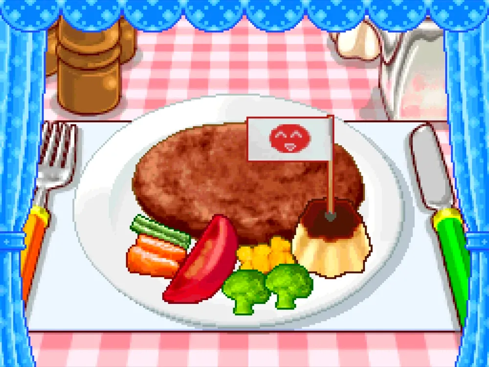
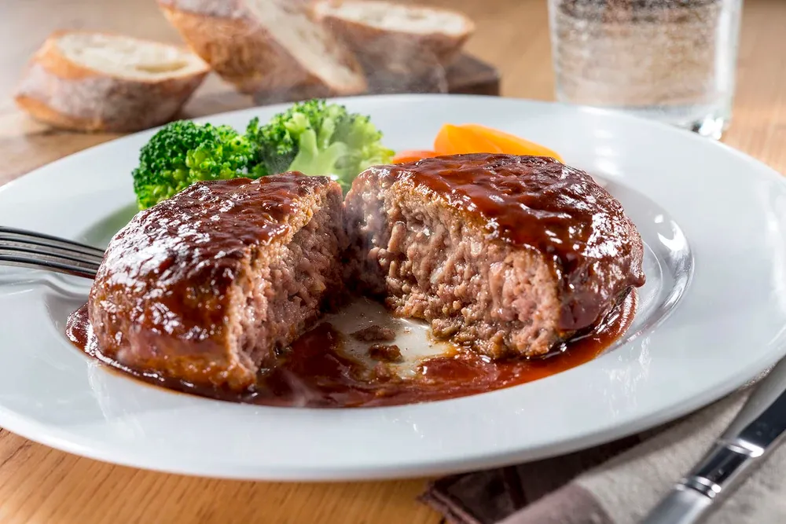
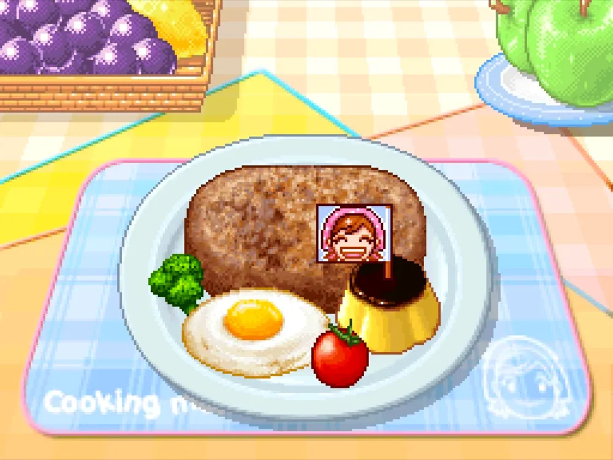

Salisbury Steak
El Salisbury steak es un plato de origen estadounidense elaborado con carne de res picada mezclada con otros ingredientes, considerado una variante del Hamburg steak.
Su creador fue el Dr. James Henry Salisbury, médico del ejército de la Unión durante la Guerra Civil americana, quien lo desarrolló como remedio contra los problemas digestivos que diezmaban a las tropas, más mortales en aquella guerra que los propios combates.
El nombre se impuso definitivamente durante la Primera Guerra Mundial, cuando los países angloparlantes evitaron usar términos de origen alemán como "hamburger", convirtiendo al Salisbury steak en la alternativa patriótica.
Décadas después, se convirtió en uno de los platos más icónicos de las TV dinners, esas bandejas de aluminio compartimentadas que definieron la cultura culinaria familiar americana de mediados del siglo XX.

Ingredientes
Pasos de la receta
- Chop up! Slice! Chop up! Cortar la cebolla en trozos pequeños con el cuchillo
- Melt the butter Derretir la mantequilla en una sartén
- Sauté! Sofreir la cebolla en la mantequilla derretida sin quemarla
- Add the ingredients! Pon la carne molida en un bol, añade la cebolla, el pan rallado y el huevo
- Knead! Mezla los ingredientes en una masa uniforme
- Make shape! Con las manos, haz bolas con la masa
- Break an egg! Rompe dos huevos en un bol
- Fry sunny side up! Fríe los huevos en la sartén sin quemarlo
- Pan-fry! Fríe la carne en la sartén sin quemarla a fuego medio
- Arrange the plate! Coloca la carne y los huevos en el plato y decora al gusto


Gameplay y recreación de la receta